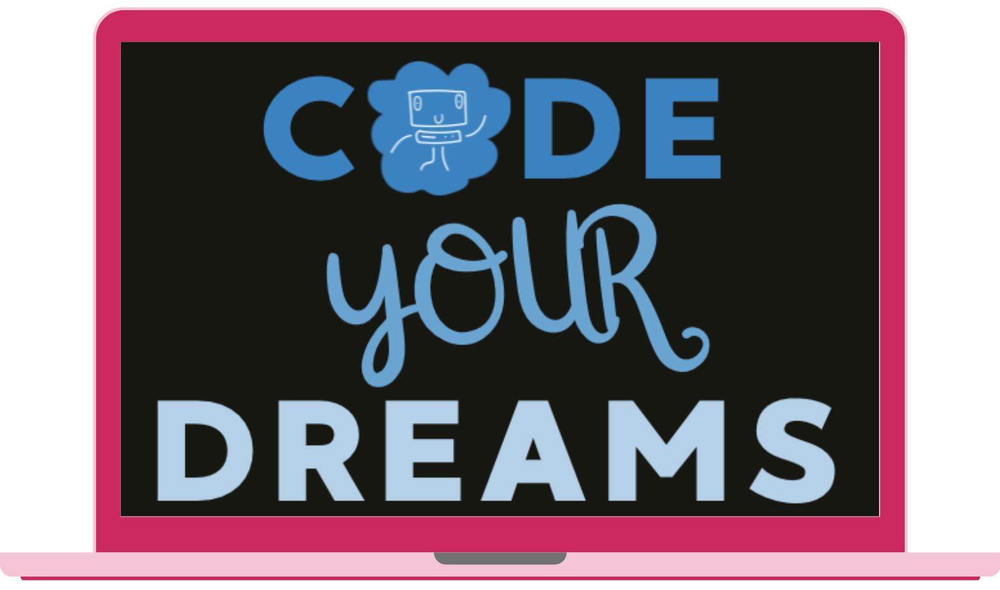

Most technology education starts with the technology. Code Your Dreams starts with the neighborhood. Learners are asked what they would change about the place they live, and the programming that follows exists to build that answer, whether that means data science in Python and Jupyter Notebooks, a web application built with Flask and a database, or a mobile tool made in MIT App Inventor. Classes run for young people and adults alike, and they are taught where learners already are, in schools, libraries, and community centers across underserved communities, so taking part never depends on a family already owning the right hardware or living in the right district.

Code Your
Dreams
Empowering communities through technology education.
Code Your Dreams is a nonprofit organization that provides accessible technology education to young people and adults, helping learners build the skills and confidence to create solutions for challenges in their own communities.
It was founded by Brianne Caplan, who leads the organization's work to put technology in the hands of the communities that stand to gain the most from it.

Get involved
Support this work
Code Your Dreams is our industry mentor on this project. Thanks to their mentorship, and the encouragement of Founder, Brianne Caplan. We were pushed to build The Environment Remembers in the first place.
This project was inspired by and built in mentorship of Code Your Dreams. Cost Of A Click 2.0, The Environment Remembers exists to make visible the hidden cost of every piece of technology and AI we create and use. It is a message that aligns directly with Code Your Dreams' mission to empower communities to build technology responsibly and thoughtfully.
Code Your Dreams needs support to keep growing. Whether you can contribute financially, volunteer your time, or simply spread the word, your involvement helps ensure that technology education remains accessible to everyone.